57 Books That Informed The Way I Approach Software Development
Published on by David VanDusen.
I talked about how valuable books are for learning software development in my previous article, Learn Software Development By Reading Books. This gave me the idea that it might be a fun challenge to recall some key and foundational books I’ve read, and roughly the order I read them.
There have been plenty of tech books I wouldn’t consider formative, and they won’t be included. On the flip side, there have been some books that were influential to the way I approach software development that aren’t tech books, so I’ll mention them, too.
Ok, buckle up for a ride down memory lane!
Timeline
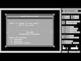 ZZT-OOP Programming Language
1991, Tim Sweeny
The first entry is an exception to the rule, as it’s an in-program help document and not a book. Stick with me, though!
Although I played around with my dad’s 286 a fair amount in the early 90’s, when he got a new Pentium machine with Windows in 1995, I inherited the old clunker and began my programming journey.
A game I was already familiar with in 1995, ZZT, came with a level editor including its own programming language: ZZT-OOP. With unfettered access to the computer, I took it on myself as a young’un to master this language.
The help document is organized much like a programming book—and you can print it! It was my first foray into reading about software development, and deserves to be included.
Microsoft® MS-DOS® Operating System version 5.0 User’s Guide and Reference
1991, Microsoft
My dad insisted on keeping this book in proximity to the 286 when he gave me the computer. So, it was around, I was feeling empowered by having learned how to use a programming language, so I found myself reading this tome. It definitely helped me generalize what I had learned about computing.
TI-83 Guidebook
1996, Texas Instruments
I usually had spare time during math class in secondary school because I completed assignments quickly. When we were assigned graphing calculators, I used some of this time to read through the user guide, which included a chapter on how to create custom programs.
Of course, the custom programs I created were games. I recall making a suite of games of chance and transferring them to the other calculators by connecting them with wires.
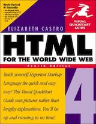 HTML 4 for the World Wide Web Visual Quickstart Guide (Fourth Edition)
1999, Elizabeth Castro
My girlfriend in 1999 was taking info-tech class at the same time as I had phys-ed. Obviously, I skipped class to hang out with her in the computer lab. Although I never took info-tech, this book was an assigned reading in that class, and I grabbed a copy anyway.
A cool thing about this book was that it introduced me to Cascading Stylesheets, which I would become a strong advocate for during the “Browser Wars.” But, man, was CSS different back in the Internet Explorer 4 days. It’s telling that this is the fourth edition of a book whose first edition came out three years earlier.
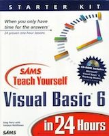 SAMS Teach Yourself Visual Basic 6 in 24 Hours
1999, Greg Perry with Sanjaya Hettihewa
I recall using the included IDE to build a tile-based RPG with my own sprite art and doing my own sound engineering. I was actually focused on being an artist and musician at this time in my life; programming was a part-time job more than anything.
This would be the beginning and end of my interest in “Teach Yourself X in Y Hours” books, not to mention proprietary programming languages.
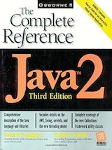 Java 2: The Complete Reference (Third Edition)
1999, Patrick Naughton and Herbert Schildt
At this point, I realized I was more interested in web development than making desktop apps. I wanted to add interactivity to my websites, so the obvious choice was to learn how to make Java Applets! Frustratingly, the limitations of how the applets could interact with the content of the web pages left me wanting something better.
Pure JavaScript: A Code-Intensive Premium Reference
1999, R. Allen Wyke, Jason D. Gilliam, and Charlton Ting
My first book on JavaScript was almost as thick as it was wide, thanks in large part to the amount of content about server-side JavaScript! That’s right, server-side JavaScript ten years before Node.js. There was a big chunk about Netscape’s APIs, and another about Microsoft’s. I never did play with any of that server-side stuff, but I read and reread the core JavaScript syntax until I knew it inside and out.
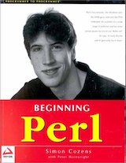 Beginning Perl
2000, Simon Cozens with Peter Wainwright
I picked up Perl as it became clear that I needed interactivity on the server side. With this book’s Introduction to CGI, I got just that. This is when I started to dig into Apache httpd, and get to know web servers more deeply.
This was also my first deep dive into regular expressions. There’s something about the way regex are presented in this book that resulted in my ability to gain fluency that has lasted me my whole career. Beginning Perl is available online for free now, so take a look at the Regular Expressions chapter yourself, if you’re interested. I bet it still holds up!
 Web Database Applications with PHP & MySQL: Building Effective
Database-Driven Web Sites
Web Database Applications with PHP & MySQL: Building Effective
Database-Driven Web Sites
2002, Hugh E. Williams and David Lane
Although the Perl book got me working with databases, this book is where I really solidified the fundamentals. This was around the time that Web 2.0 was emerging: the “read-write Web.” This marked a big shift in the kinds of software development projects I was taking on because of the relative ease of shipping an app to a shared LAMP server.
Designing with Web Standards
2003, Jeffrey Zeldman
The orange one! This book got me really fired up about web standards and thinking about the apps I was making as products that are meant to hit a certain bar for quality.
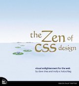 The Zen of CSS Design: Visual Enlightenment for the Web
2005, Dave Shea and Molly E. Holzschlag
This book was based on Dave’s popular website, CSS Zen Garden. I was lucky enough to work with Dave for a while at Bench Accounting, and I can confirm that he has a very structured way of thinking about design, which I appreciate immensely.
At the time I read this book, even though CSS had decent support in IE, Firefox, and Opera (I don’t know about Safari—not many Mac users to worry about back then,) most popular websites were still sliced images in HTML tables. The whole CSS Zen Garden thing was a big step forward for getting the industry to adopt the technology.
Bulletproof Web Design
2005, Dan Cederholm
I had been following Dan’s blog for some years when he announced this book. I was already engaged with his approach to web design, so it was great to see his thoughts published in this format.
I had the pleasure of chatting with Dan at Web Directions North 2007, and by that time I had already started implementing some of his ideas in my projects, to great success.
Using Microformats
2006, Brian Suda
I remember watching Microformats emerge and being very pumped about the idea. When a downloadable PDF “book” about it became available, I just had to show my support. Anything you’d ever want to know about Microformats is on the Microformats wiki.
Web Accessibility: Web Standards and Regulatory Compliance
2006, Richard Rutter, Patrick H. Lauke, Cynthia Waddell, Jim Thatcher, Shawn Lawton Henry, Bruce Lawson, Andrew Kirkpatrick, Christian Heilmann, Michael R. Burks, Bob Regan, and Mark Urban
I had been following Bruce Lawson when he announced this book. Accessibility was a major consideration in the work I was doing, and this book was crucial for my development at the time.
I was lucky to have an accessibility mindset going into the smartphone age, when new assistive technologies would be developing at a breakneck pace to keep up with the development of mobile tech.
 Don’t Make Me Think: A Common Sense Approach to Web Usability (Second
Edition)
Don’t Make Me Think: A Common Sense Approach to Web Usability (Second
Edition)
2005, Steve Krug
Many of the authors whose blogs I was following had mentioned this book at some point. It took me a while, and a second edition release, before I gave it a go. It seems like it’d be a risk to publish a book where the content is just a bunch of common sense, but I’ll tell ya, it helps to have it printed on paper when you need to convince someone that something is common sense.
Bulletproof Ajax
2007, Jeremy Keith
The infamous “Hijax” book. This book was about adding functionality to websites with JavaScript, but it clearly described a strategy for graceful degradation, showing unequivocally that there’s no reason to exclude less capable user agents just because you want a dynamic website.
Pretty soon smartphones would be invented and a whole slew of new, less capable devices would hit the web. This was going to be a very important idea!
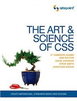 The Art & Science of CSS
2007, Cameron Adams, Jina Bolton, David Johnson, Steve Smith, and Jonathan Snook
I won this book in a contest held by Cameron on his blog. At that point in time, I was living the web standards life, and this book added some great tools to my arsenal.
The book had a whole chapter on rounded corners; CSS did not have the
border-radius property at the time. The modern look in those
days was to put rounded corners on everything. Of course, now that it’s
one line of CSS to add rounded corners, the modern look is square corners.
¯\_(ツ)_/¯
RESTful Web Services: Web Services for the Real World
2007, Leonard Richardson and Sam Ruby
Everybody was talking about REST, and nobody seemed to know what they were talking about. Folks were getting excited about doing mashups between sites, and it seemed like new applications were meant to come with public APIs.
This book really helped me make sense of the hype at the time. Later it would become a guidepost for many later design decisions as more of my work became, in essence, API development.
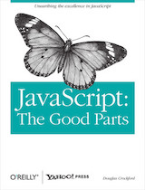 JavaScript: The Good Parts
2008, Douglas Crockford
This book is notorious. To get an idea for the tone of this book, check out the presentations Douglas Crockford gave at Yahoo on JavaScript. Many books on JavaScript tiptoe around the language’s weirdness. This book takes that weirdness head on…with railroad diagrams.
One great thing about reading this book was that it gave me some backup when I needed to argue against using tricky code to get something done.
The best thing, though, was being introduced to JSLint. Static code analysis and code quality tools would soon become an important part of my development process.
 High Performance Web Sites: Essential Knowledge for Frontend
Engineers
High Performance Web Sites: Essential Knowledge for Frontend
Engineers
2007, Steve Souders
Essential is right! The approaches in this book are so commonplace that you’re expected to be able to recite them at job interviews.
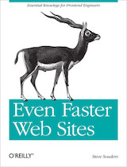 Even Faster Web Sites: Performance Best Practices for Web Developers
2009, Steve Souders
This is the nitty-gritty, current (at the time) tech for making fast sites. A lot of good stuff in here—a lot of different stuff. It certainly drove home the idea that you have to be a generalist to do websites properly.
Getting Things Done: The Art of Stress-Free Productivity
2002, David Allen
Being self-employed requires a lot of discipline when managing resources, especially time. This book is presented as a list of techniques for time management that you can either take or leave.
An important takeaway for me was that brains are not for information storage and retrieval—use tools for that. Write stuff down in a place you check regularly. Now I use Google Keep with the widget on my Android phone’s home screen, so I see my notes every time I unlock my phone.
Another important one was, if it takes less than two minutes (or your preferred time box), just do it immediately. That one is so broadly applicable that it’s touched many parts of my life outside of work.
Getting Real: The smarter, faster, easier way to build a successful web application
2006, 37Signals
I followed the Signal V. Noise blog back when 37Signals had lots of different apps, one of which was Basecamp. Now they’re called Basecamp, and all their apps are features of an app called Basecamp.
I was being referred for contracts building Rails apps. It became apparent Rails was designed to support a certain scrappy, agile approach to development. This book put that into words.
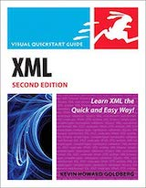 XML: Visual QuickStart Guide (Second Edition)
2008, Kevin Howard Goldberg
XML is very simple, and it doesn’t take a book to learn how to write it. However, using XML is more than writing it. Need to read or define a schema? Better know DTD or XSD, which this book walks through smoothly.
Typography for Lawyers: Essential Tools for Polished & Persuasive Documents
2010, Matthew Butterick
The design circles I was moving in had started to murmur about this book and how clearly it explains the basics of typography. Communication with designers and clients about typography had always been tricky, and this book was a smooth way of aligning on standards and best practices.
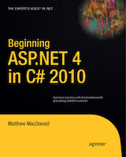 Beginning ASP.NET 4 in C# 2010
2010, Matthew MacDonald
I signed up for a course at BCIT, and this was on the reading list. It gave me an appreciation for the design of the C# language, especially since I was a Java and PHP user. I didn’t know I would end up getting a job writing C#.
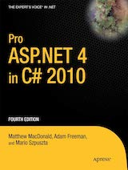 Pro ASP.NET 4 in C# 2010 (Fourth Edition)
2010, Matthew MacDonald, Adam Freeman, and Mario Szpuszta
I’m glad I got a job writing C#. It’s a nicely designed language, and it pays to get a formal introduction to its cool and useful features.
Pro Git
2009, Schott Chacon
I was done with Subversion. The company I was at was done with Microsoft, and Team Foundation Server was on the way out. Git was the way to go, and I wanted to be a Git pro—so, Pro Git.
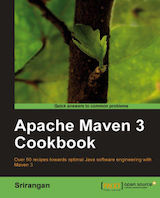 Apache Maven 3 Cookbook
2011, Srirangan
We were building stuff with Spring Framework, and I was the architect. Maven was already baked into the project, so I needed some ways to wrangle it. And wrangle it I did.
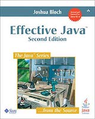 Effective Java (Second Edition)
2008, Joshua Bloch
This was the beginning of a big push to learn every little thing I could about the practice of software development, not just the tech. I recall this book being extremely useful for someone currently working on a Java program. Basically every page I read had something I could apply to what I was building at the time.
It got me very curious with the Java standard libraries, and I started reading the source of each library method I called as a habit for a while after this.
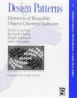 Design Patterns: Elements of Reusable Object-Oriented Software
1994, Erich Gamma, Richard Helm, Ralph Johnson, and John Vlissides
It was time to read some classics. I was working on enterprise Java software at the time, so I encountered a lot of these patterns in the frameworks I was using on the daily. That’s probably the best way to learn design patterns, I imagine.
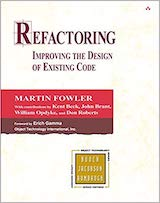 Refactoring: Improving the Design of Existing Code
1999, Martin Fowler with Kent Beck, John Brant, William Opdyke, and Don Roberts
I came at this book from an angle that may be somewhat unusual. I was working on replacing the client application for an existing app, so the code was all new, and the database would remain the same.
My key takeaways were: write code that will be easy to refactor; don’t write code that you will want to refactor anytime soon; and, write testable code, because you can’t safely refactor if you don’t know what you’re breaking (and you’ll be breaking things.)
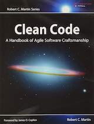 Clean Code: A Handbook of Agile Software Craftsmanship
2008, Robert C. Martin
I remember picking this up at the same time as Code Complete. Unsure which I should read first, I gave Code Complete a try. It didn’t click with me, so I switched. Clean Code was immediately useful, and enjoyable.
I don’t know how well it aged; there was a blog not too long ago asking, “Is it time we stopped recommending Clean Code?” I think the book probably comes across differently to new and experienced developers. Strong advice in a book can’t really be clarified by the reader, so unless the reader already has strong counterarguments, it might come through as doctrine.
It might be intended as doctrine, but if taken as just another way to think about software development, I see it as having practical use. It definitely offers a picture of the professionalism that software developers can hold themselves to.
Butterick’s Practical Typography
2013, Matthew Butterick
After having success recommending Typography for Lawyers to folks that wanted to improve their typography know-how, I was happy to see that those lessons had been revised for web publishing.
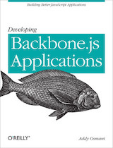 Developing Backbone.js Applications: Building Better JavaScript Applications
2013, Addy Osmani
Frontend frameworks had recently become a thing. Web users were coming to expect single page applications. A little jQuery on top of a server-side rendered application was the old way of doing things, so new projects had to choose a framework to build on—not a decision to be taken lightly.
Thanks to Chrome, JavaScript engines in all browsers were becoming more powerful every release, and new frameworks work were coming out regularly, trying to harness this new power.
There were some players who were around for a while already, like Dojo Toolkit. The front page of Hacker News at the time was frequented by Backbone, Angular, and murmurs of React. It felt like the right move to dig into these new approaches and pick one to build on. Backbone won me at the time with its dedication to simplicity.
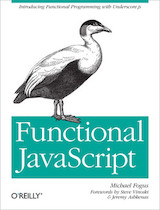 Functional JavaScript: Introducing Functional Programming with Underscore.js
2013, Michael Fogus
Backbone had one dependency: Underscore.js. There had been attempts to make a flexible utility library for JavaScript, separate from a DOM library (Ajax library?) like jQuery. Prototype.js was a popular one, and it left a bad taste in many developers’ mouths because of its choice to extend base types instead of simply defining pure functions that act on them.
Underscore, and books like this, were an important part of helping JavaScript developers to learn the functional programming vernacular. I saw a shift to simpler frontend solutions once the devs started applying more functional programming concepts.
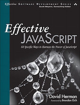 Effective JavaScript: 68 Specific Ways to Harness the Power of JavaScript
2012, David Herman
I found myself spending more of my work hours mentoring as the company I was at started taking on co-op students from the University of Waterloo. So, I started reading lots of introductory books on JavaScript in order to learn new ways of explaining JavaScript concepts. This is one of the few to make this list because of my fond recollections of just how well-written it is.
Beautiful Evidence
2006, Edward Tufte
My boss at the time was keen on data visualization. He was thinking about adding sparklines in some areas of the app we were building, which are described in this book. Reading this book is an excellent example of how books can create common ground between professionals. After reading it, we had a huge amount of shared understanding of data visualization that we could use to discuss feature design.
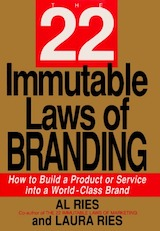 The 22 Immutable Laws of Branding
1998, Al Ries and Laura Ries
I was playing a pretty big visual and brand design role at my job, and my boss requested I pick this one up because there were a couple of brands that the company needed to develop.
Inside the Tornado: Strategies for Developing, Leveraging, and Surviving Hypergrowth Markets
2005, Geoffrey A. Moore
Working for a small tech shop that had experienced explosive growth, it was important to understand how market forces informed the technological choices during that period of hypergrowth. This book was a big help because it showed me the parallels between the company I was at and others that had experienced similar growth and come out the other end a success.
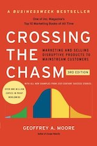 Crossing the Chasm, 3rd Edition: Marketing and Selling Disruptive Products to Mainstream Customers
2014, Geoffrey A. Moore
After reading Inside the Tornado, a new edition of Crossing the Chasm was released. Just as important to understanding how the company got to where they were, this book lays a roadmap for how to plan for the long road after the hype dies down, which was an important part of my role at the company.
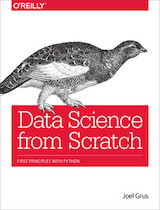 Data Science from Scratch: First Principles with Python
2015, Joel Grus
The “big data” hype had been around for years at this point, and anyone in a job transition was met with job boards that were filled with companies trying to build out data science teams. This book was a nice peek behind the curtain of the day-to-day of those teams.
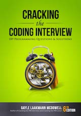 Cracking the Coding Interview: 189 Programming Questions and Solutions (6th Edition)
2015, Gayle Laakmann McDowell
I ended up becoming a software development teacher for some years, and a big part of teaching folks about software development is teaching them how to get a job. This book explains (and perpetuates) the misguided technical interview process that many companies use. I read it with clenched teeth, and came out the other side with improved advice for my students about how to slog through our industry’s insistence on keeping this archaic tradition alive.
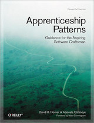 Apprenticeship Patterns: Guidance for the Aspiring Software Craftsman
2009, David H. Hoover and Adewale Oshineye
I wonder how many of my students that I recommended this book to actually gave it a read. It tries to explain approaches to advancing your software development career in the form of design patterns. The problem is, folks who are new to software development probably haven’t learned to apply design pattern in their work yet, so I wonder how well this strategy works when applied to their careers.
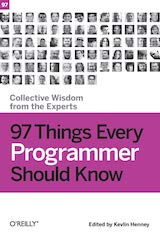 97 Things Every Programmer Should Know: Collective Wisdom from the Experts
2010, Kevlin Henney
I acknowledge that my career in software development is not typical, and so I had hoped that reading about others’ experiences might help me to be a better mentor to people getting into the field. I don’t remember too many of the stories, but it was interesting to hear how my experiences, although atypical, had many parallels to people who took a more traditional route.
It wasn’t until I tried recommending this book to others that the lack of diversity of its authors was pointed out to me. I would hope that a book like this published nowadays would be more representative.
Securing the Perimeter: Deploying Identity and Access Management with Free Open Source Software
2018, Michael Schwartz and Maciuj Machulak
The conversation around web application security has changed massively over the years. It used to be, worryingly, “Which hashing function do you use before storing passwords?” Luckily, the conversation is shifting toward federated identity, SSO, and MFA, and away from home-baked IAM.
I think my takeaway from this book was the exposure to a consistent voice on the variety of topics involved in IAM, which are normally discussed piecemeal in documentation and other resources.
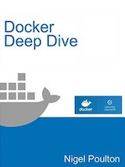 Docker Deep Dive
2017, Nigel Poulton
Having had my computers’ resources eaten by VMs for the years leading upto containers becoming mainstream got me super pumped to learn this stuff as well as I could. Since the containerization landscape was and still is shifting, the best a book will do for you is to lay a solid foundation, but it’s worth it—that’s not what the docs and examples are for.
The Kubernetes Book
2017, Nigel Poulton
At the time, this was the must-read, “How to speak devops,” book. Sick of all the problems with the older ways of deploying microservices, it seemed like everyone was extremely eager to immerse themselves in the problems of the newer ways. On that note, everything that I said about Docker Deep Dive applies here as well.
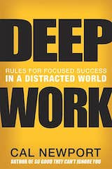 Deep Work: Rules for Focused Success in a Distracted World
2016, Cal Newport
My strategy for getting focus time at work is to wake up early and get into the office a few hours before everyone else. Lucky for me, most devs don’t get to the office until 10:30 or so. But that raised the question, how do those devs get focus time.
A handful of us at my company had been recommended to read this book by the head of engineering. By spreading these ideas around, I think the idea that people wanted to be uninterrupted really made it into the culture, and there was some real improvement on reducing distractions.
 HTTP/2 in Action
HTTP/2 in Action
2019, Barry Pollard
It was strange watching Chrome take over the browser market and then push its own protocols, SPDY and QUIC. Sometimes I would come to work and look in the Network tab in my dev tools and be confused by seeing new protocols.
Eventually HTTP/2 became a proper standard, and folks outside of Google were playing with how to optimize their sites using it. It was messy—server push was getting people excited, but ended up being less useful than originally thought. A lot of optimization came from merely using the protocol (which meant figuring out how to get your server to speak it.)
I chose to read this book on it because it came after things had settled down a bit and a lot of kinks had been worked out. That was a good call; I had read books on tech that was too fresh before, and that’s really not the time to be putting things into print.
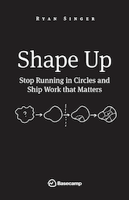 Shape Up: Stop Running in Circles and Ship Work that Matters
2019, Ryan Singer
The company I was at when this came out was looking for a better way to triage projects and get the most out of their small software engineering team. The head of engineering at the time figured we should give this approach a try. The technical leadership team and I gave this a read and hashed out how we could progressively adopt the parts of the approach that would work for us.
TCP/IP Illustrated, Volume 1: The Protocols (Second Edition)
2011, Kevin R. Fall and W. Richard Stevens
One day at work, I gave a presentation about the protocol stack to the developers on my team. It was short, and I felt confident in what I said, but afterward, I started reflecting on just how deep my understanding of the protocols was. The problem was, I didn’t know how deep because I had picked up most of my knowledge over the years on the job.
This book was a great opportunity for me to fact-check my understandings of the protocols and reinforce my knowledge of the history that lead to the refinement of the protocols into what we contend with today.
Security Engineering: A Guide to Building Dependable Distributed Systems (Third Edition)
2020, Ross Anderson
Ross already had plenty of cred with me via his appearances on YouTube. Somehow I caught wind of this new edition and immediately ordered it and dug in.
In the same way that my approach to application development changed when I started making decisions based on the holistic understanding of software development as a business, the comprehensive approach to this book, including its reflections on past editions, have prompted me to think about security engineering in a more holistic way, too. I also am saying “capable, motivated opponent” more regularly now.
ZZT
2014, Anna Anthropy
ZZT meant a lot to me, for reasons made obvious by this post. It was wonderful to read this book about the impact it had on so many others. I am among the many people in my generation that got their start in programming using the ZZT level editor, and this book helped me understand the similarities between my path and the paths of others from that community.
The Psychology of Computer Programming: Silver Anniversary Edition
1971, 1998, Gerald M. Weinberg
I don’t recall when I first stumbled on the Ten Commandments of Egoless Programming, but I had been passing it out for years before I thought to myself, “I ought to actually read the book that that’s based on.”
This book was a real trip! Written in 1971, with notes at the end of each chapter added in 1998, and read by me in 2021, it was fascinating to hear how little has changed in software development in fifty years. The experience got me really pumped to dig more into the history of software development and to better understand not only how we got to where we are, but what the dead ends along the way were as folks experimented with approaches.
Becoming a Technical Leader: An Organic Problem-Solving Approach
1986, Gerald M. Weinberg
I started reading this book in 2019, but didn’t finish until 2021. I was purchasing another Weinberg book and spotted this one in the recommendations and thought, “This is very relevant to me right now,” so I grabbed it. I got a couple chapters in, then another book became even more relevant. When I finally picked this one back up, it prompted me to create this very website with my first article, Word Processor That Works Like Pen And Paper.
I expect to be writing more articles prompted by Weinberg books as I focus more on technical leadership and read more from the Quality Software Management series.
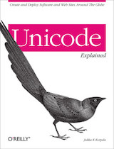 Unicode Explained: Internationalize Documents, Programs, and Web Sites
2006, Jukka K. Korpela
Another book from a series of purchases prompted by conversations about technologies that I had learned on the job. I had been working with Unicode for a long, long time, and had a pretty solid understanding of it. But, when I was in the position of explaining it in depth verbally, I realized I didn’t have many the specifics memorized. Having read this and done experiments and further research, I expect to be able to explain Unicode concepts more thoroughly and correctly than before.